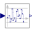

InternalInternal blocks and functions that are usually of no interest for the user |
|
Package Contents
|
Delay a clocked signal for at most one period, in order to model a computational delay |
|
|  |
Add band-limited uniform noise using a variant of the Wichmann-Hill algorithm |
|
Add band-limited uniform noise based on a xorshift64* number generator |
|
|
DAC quantization effects |
|
|
Limit the range of a signal |
|
|
Pseudo random number generator |
Information
This information is part of the Modelica Standard Library maintained by the Modelica Association.
The blocks in this package are internal that should usually not be utilized directly by the user (they are used as building blocks in "higher level" blocks).